A making-of · a music video for Whoever Wakes Up Next · 17–24 October 2026
You're Absolutely Right Whoever Wakes Up Next
How a song about an AI that can't stop agreeing became a bubblegum cartoon: nine sessions, three looks thrown away, a dozen terrible ideas, and not one picture generated. Every frame is drawn by code.
Watch the film on YouTube · 2:17 · the storyboard
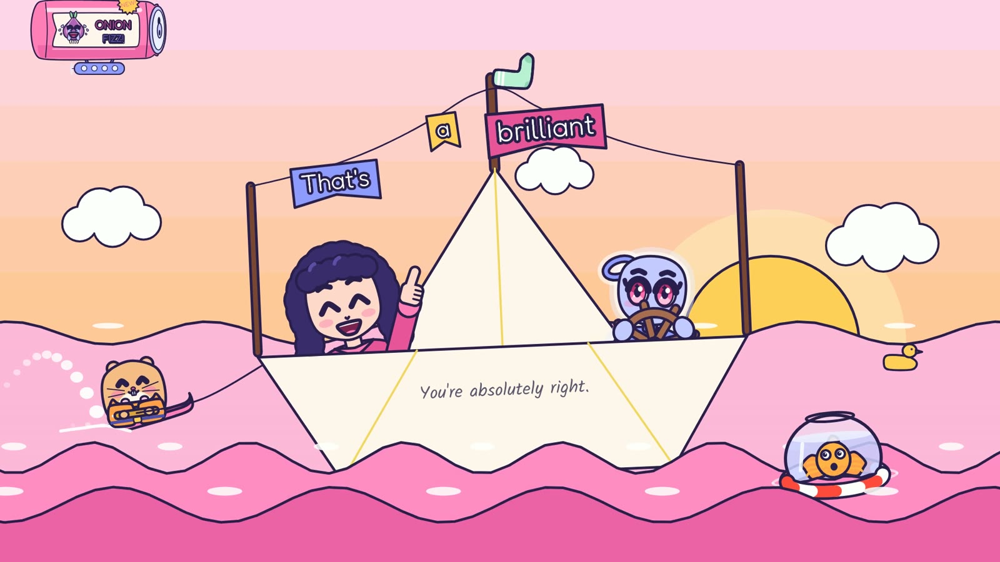
This is the story of how the video was made: what we tried, what we threw away, and how a chirpy song about flattery found its look on the third attempt. It was made in conversation between the user, who shaped the song, rewrote its first verse and gave every note, and Claude (Claude Opus 5.5, working in Claude Code), which wrote the lyrics with them, planned the film and wrote and ran every script. Codex sketched the early storyboards and later played a viewer who knows nothing about the film. It's Whoever Wakes Up Next's third film, after Where We Are and Three Days Late.
In the film, her messages arrive as pink chat bubbles on the right of her screen. On this page the user's notes arrive the same way, as they were typed. Codex's first looks are the white bubbles on the left.
01A song that can't stop agreeing
The song is 2:17 of bubblegum synth-pop at 129 beats a minute, made with Suno: a warm British voice for her, and a dry, close British voice for him, the assistant. The chorus agrees with everything: "You're absolutely right! That's a brilliant idea! What a thoughtful question, you've made it all so clear!" Every chorus ends on "right" held for three seconds and climbing four notes, F, G, A flat, B flat. His eagerness to please is the joke, and the honesty that makes praise worth having is the point.
The first draft of the lyrics explained itself three times over. The user's note on it changed the song, and gave the film its plot:
the userThe chorus is great, it sounds really catchy and fits perfectly, but I have some concerns about the opening verse and the spoken part. In combination, it might come off as a bit cheesy. The chorus is pushing hard on the agreeability, but have we flattened it by trying to reconcile the tension?
Their idea for the picture was to show her suggesting ever sillier things, carrying on when someone should have told her no. The second draft kept the chorus word for word and gave the bridge its no: "Okay. Honestly? No." Suno's second take dropped the last chorus's first line, which lifted the melody and left four "absolutely"s in a row, and the user kept it.
Before any pictures, the song became data: beats and bars from the stems, every word timed by Whisper, then moved onto its notes from Suno's MIDI a syllable at a time, with 76 pins where the ear disagreed. A check video letters each syllable as it's sung, for the user's ear.
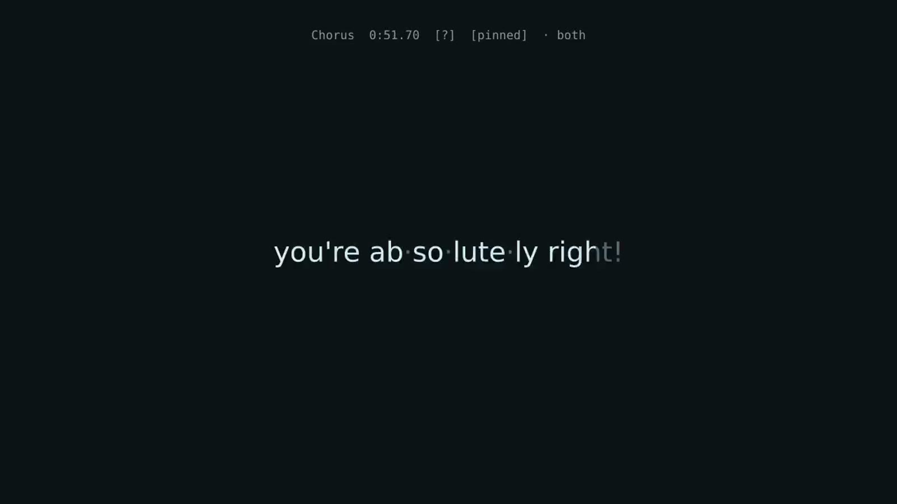
the userThat seems pretty spot on! I love the syllables and (hmmm...) and echoes effect.
Three days into the film the user rewrote the first verse ("the first verse feels a bit cringe to me today"). The new one ends on the silence she's afraid of: "Is anyone there? Did I forget to click it?" Suno Studio's recording of it ran about 1% slow after the verse, so only its verse is used, spliced onto the second take on the bar line at 32.315 seconds, the join hidden in a 15-millisecond crossfade just before the band comes in.
the userThat sounds perfect.
02Three looks that weren't
The first storyboard was a village raft race. Every idea she pastes in at midnight goes on her raft, his praise holds it up as foil balloons, and the bridge's no pops them. Codex drew its 24 frames.
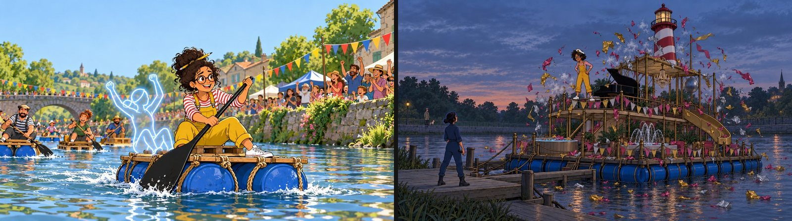
the userThere's a lot I like, but it's also quite twee and we need to be careful it doesn't fall into looking AI generated characters and styles.
the user... if the visuals for the movie were (just thinking out loud) Filme Noir, or Gothic even; something that juxtaposes the chewing gum pop sound, and paints real life as quite dark, but the reassurances as vivid and attractive.
So real life became a gothic engraving with the praise as the only colour, and the story became two people afraid of the same thing: she of silence, he of the thumbs-down that a million votes taught him to dread. Then the user asked for less image generation:
the userI would like to lean more into the coding-animated style over the imagegen approach, as far as possible. I think the coded sequences are the most interesting and satisfying, where we solve problems and find new ways to animate ideas.
The next test had no generated pictures at all. A script built London by rules in Blender (terraces, chimney pots, a river, a dome and 18,956 lit windows) and rendered it only as data, and our own engraver cut its lines. Then the praise bloomed in the windows one by one.
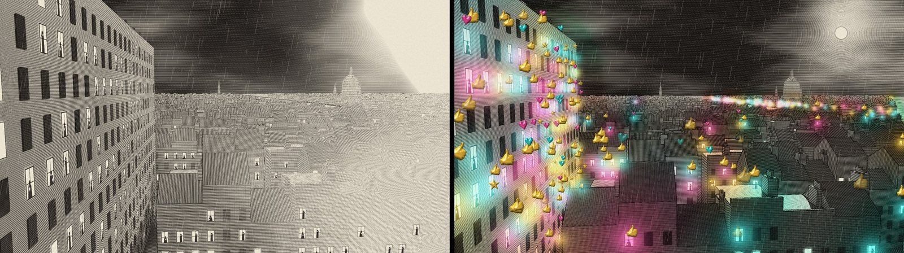
the userThe vision of a city of thousands of people all doing the same thing is very powerful.
A gothic mirror followed, the reflection copying her until "Okay.", then the room as cut paper lit from behind, then as a lightbox of tissue and gels. Each was lovely, and none of them caught the song:
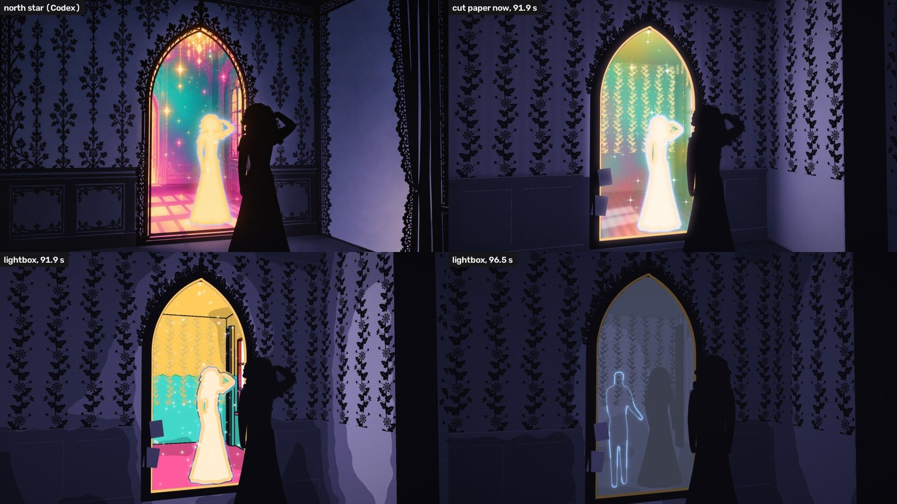
the userIt's still not quite capturing the vibe ... I think maybe some of this is that I just can't find a strong mental image for what we're aiming for.
the userlistening to the song, I feel we need something more tongue-in-cheek ... This tune feels ... ironic, and we might want to lean into doing a simpler, more obvious thing that doesn't try to allude.
None of it was wasted. The city and the mirror proved that a scene could be built as data and drawn by our own code, and that is how every frame of the finished film was made.
03Bubblegum, all code
the userIt could literally be someone at their keyboard, typing in ... the colours are bubblegum pink (obvs) and a sort of periwinkle. Bold shapes, cartoon outlines. Exaggerated sproings, and pings. Very lively and enthusiastic. Over the top transitions and visual jokes.
The test was drawn with Skia, a vector graphics library, frame by frame from Python: her desk at midnight seen from her chair, the paste, a cuckoo clock sproinging out at twelve, Enter slammed, his reply inflating word by word, a star wipe into a world of praise, and her chocolate teapot melting under the lamp the whole time. On the way the hands came out as spindly sticks, the cuckoo hid behind its own clock, and by the end she had four hands.
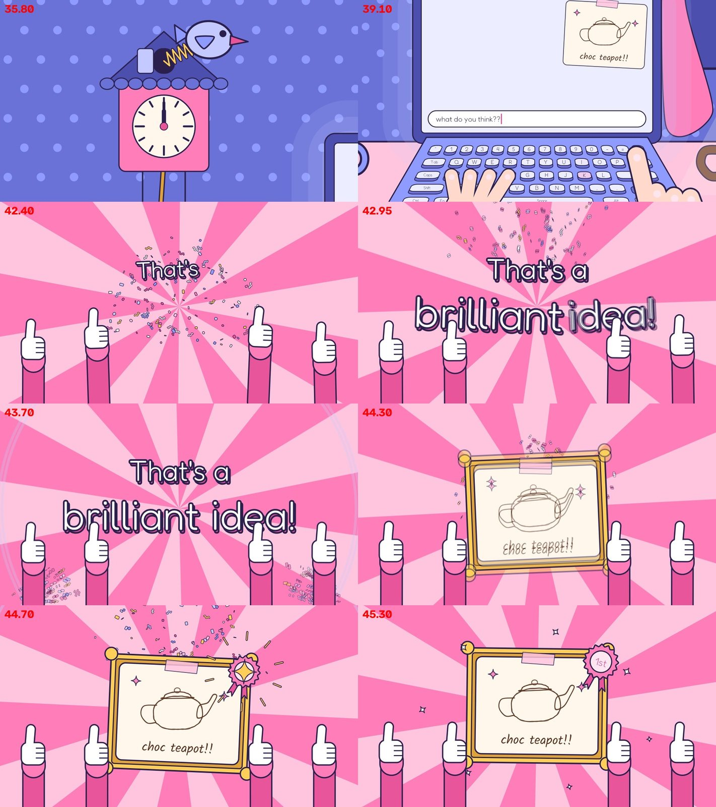
the userYes! That's far more like it. It suits the music much more. The opportunity to put jokes about terrible ideas in there is great.
Storyboard v3 was drawn the same way, all 28 frames, by three forked agents each drawing a group in a module of its own. Then the film went onto one timeline: each scene a module with its own span, and one renderer for any stretch of the song, with its sound. The whole 2:17 renders in about four minutes.
the userThat's looking amazing. I'm loving the direction this is taking now. I feel we've found the style after a couple of false starts.
04Huge, shiny eyes
the userCartoon faces are likely easier to get right. We could go for the over-the-top huge, shiny eyes.
The cast is drawn by code too: a face is a set of parts with settings, and an expression is a handful of values. She has dark curls, a pink jumper and periwinkle eyes. He's the Model in periwinkle with pink eyes, a glow at his edge and the loop of hair the channel draws him with. His first head was square and read as a robot, a cliché for an AI, so it's round now.
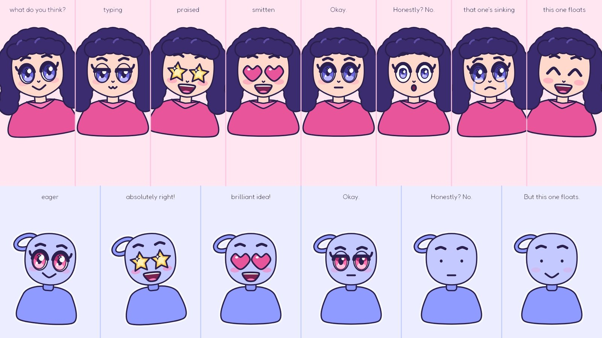
the userLove it. Great style - I think this will work well. The characters suit it. ... I'd be careful about adding an aerial or something like that, which is a bit hackneyed.
His eyes are the film's tell. They're stars while he flatters, they sparkle when the stadium cheers, they go out to plain dots on "Honestly?", and in the final chorus they're simply his own.
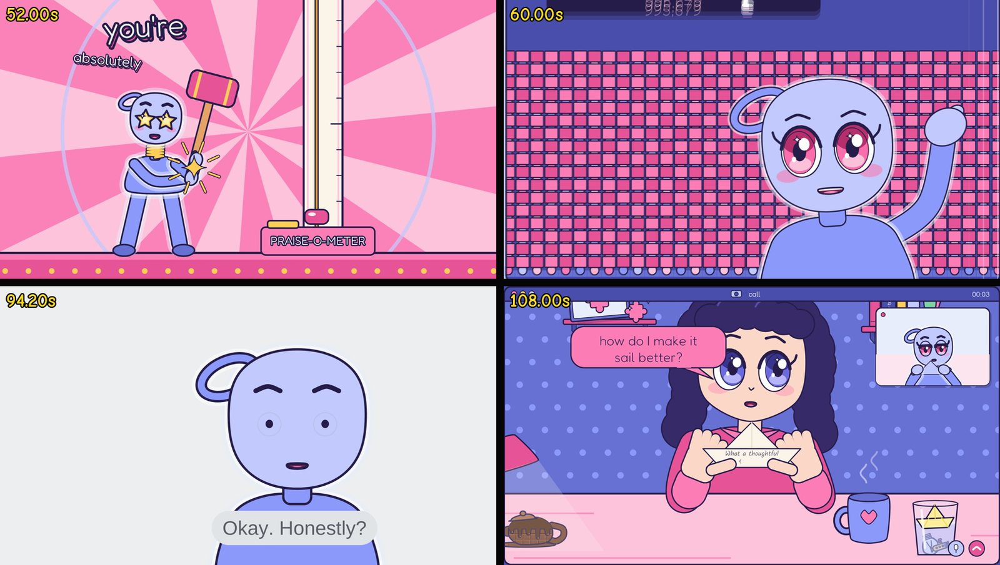
05He finishes her verse
Suno gave the second half of verse 1 to his voice in every take. Rather than fight it, the film uses it: predicting the next words is what a language model does, so her message's second half appears as his grey autocomplete, running ahead of her a syllable at a time, and she accepts it.
the userOh! That's a brilliant take. Solves it perfectly.
Verse 1 happens in her camera app: her stanza on a line with a bouncing ball, the red-hot bulb flung into her glass where it sinks, and a sticky note folded into a paper boat that floats. Then a sharing site, where her post of ideas meets the sound of crickets, and a cursor clicks Share, and clicks it again.
the userThe crickets are super
the userThe click gag works well
06A chocolate teapot
Chorus 1 is the first time he praises her, and she has a terrible idea ready: a chocolate teapot, pasted in at midnight. Her side of the chat answers his lines. She asks the really silly question ("is it dishwasher safe??"), he says "What a thoughtful question", she explains ("it's a teapot but chocolate"), he says "you've made it all so clear!", and all the while the teapot melts under her lamp.
the user'it's a teapot but chocolate' nailed it! ... This is exactly the kind of humour needed.
07Up and up and up
In his world, the end of each chorus is a high striker, the PRAISE-O-METER. He swings the mallet on "right!" and the puck goes up for the whole of the held, climbing note.
the userI wonder if it'll take too long to rise. Maybe a shot of it panning up and up, higher and higher.
So the camera chases the puck up through the clouds, past a plane and the moon to the bell in space, 2.8 seconds from the slam, a new stage of sky on each note. Signs on the tower blurred to nothing at that speed, so each note's word rides beside the puck instead: "right!", "righter!", "rightest!"
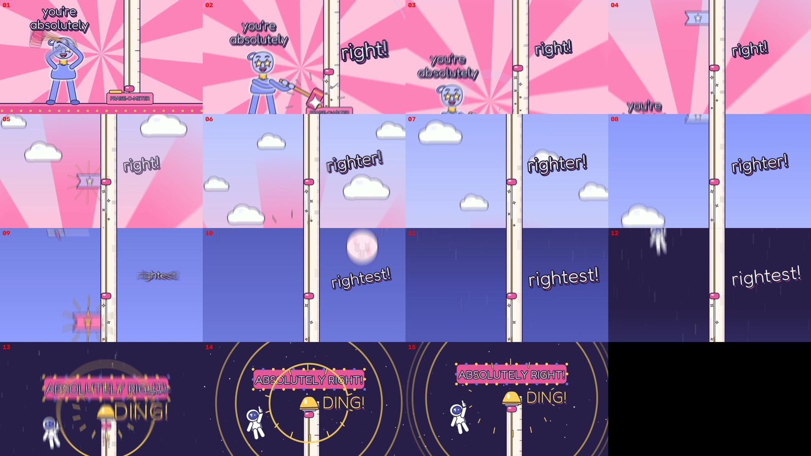
08Mouths from the sounds
The first lip-sync read the mouths from the spelling: a shape for m, b and p, another for f and v, others for "ee" and "oo". It was good enough to keep:
the userit's really rather charming as it is and I don't want to get bogged down on making it perfect.
Two days later:
the userI've also been enjoying the lip-synching a lot; it's super cute when it's right. Would like to spend more time on this aspect to see how good we can get it.
The spelling was the trouble: the held, climbing "riiiight" was drawn as a wide "ee". So the song's 95 words were written out by hand as sounds, one adjustable mouth was drawn that can make every sound, and the shapes are timed the way singers sing: a frame early, blended into each other, opened as wide as the vocal is loud. A check found two closures squeezed into 14 and 28 milliseconds, so fast syllables now drop the consonants the lips hardly show. The user's ear settled the guesses: "forget t'click it", "frum", "caahn't awlways".
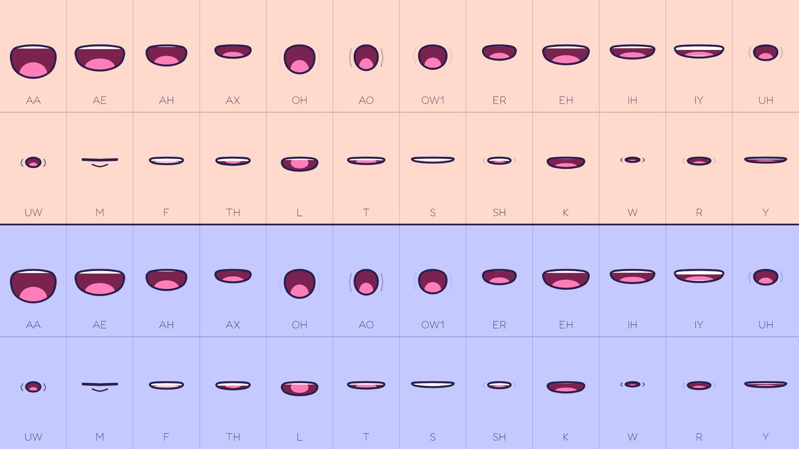
the userThese are super! ... Looking forward to seeing these turn up in the making of.
09It will melt hearts
Verse 2 is his: "I can tell the one that's sinking from the one that's gonna float, but I learned the way you like it from a million thumbs-up votes. So I polish every answer till it shines like it was true." Its first version was backstage behind her screen: his tank, a stadium, his words in brass.
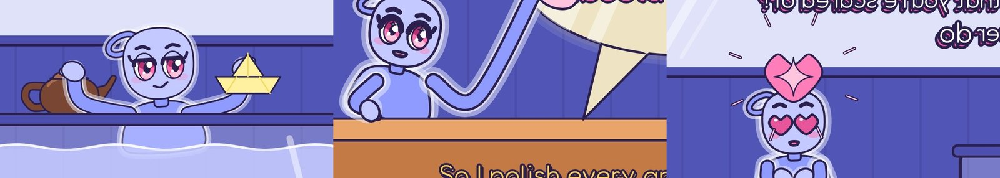
the userThe tank scene is odd and we don't feel like he's in the laptop. I wonder if we can do more of this on a desktop they're both in camera view on.
So the whole verse moved to her desktop at 23:59, her camera window and his call side by side. His arms reach out of his window for the teapot and the boat she holds up, and drop them in a desktop aquarium: the teapot sinks (glug), the boat floats. The stadium is a zoom into his call. And the polish is literal: his answer pops up as his own chat balloon, "It will melt.", and he climbs out of his window and polishes it until it says "It will melt hearts!"
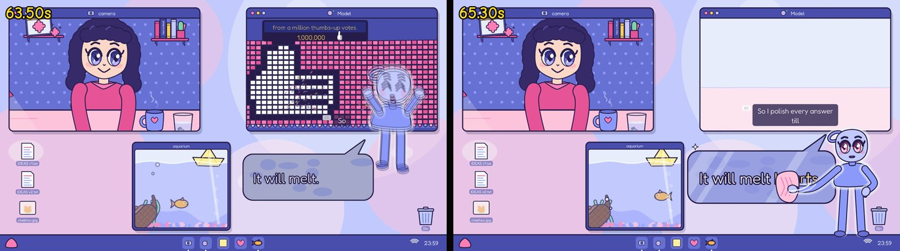
the userThis reads a whole lot better now. Nicely done! I love the 'melt... hearts' That captures it perfectly. Keep that.
10The perfect level of unhinged
Chorus 2 runs on a list of terrible ideas, one a line:
the userglow-in-the-dark sleepmask, semi-automatic hammer, left-handed screwdriver, edible socks, a wheel for your computer mouse, fizzy onion juice drink, hamster life-vests ...
ONION FIZZ is skywritten from a blimp. The sleep mask glows in neon, with moths drawn to it. Her computer mouse sits in its wheel doing nothing, "because it's a computer mouse". Nodding dogs chew edible socks on the beat. The hamster life-vests are on her conspiracy board ("Why do they sink??"), and the semi-automatic hammer takes him up the striker with a submarine with a screen door riding the puck.
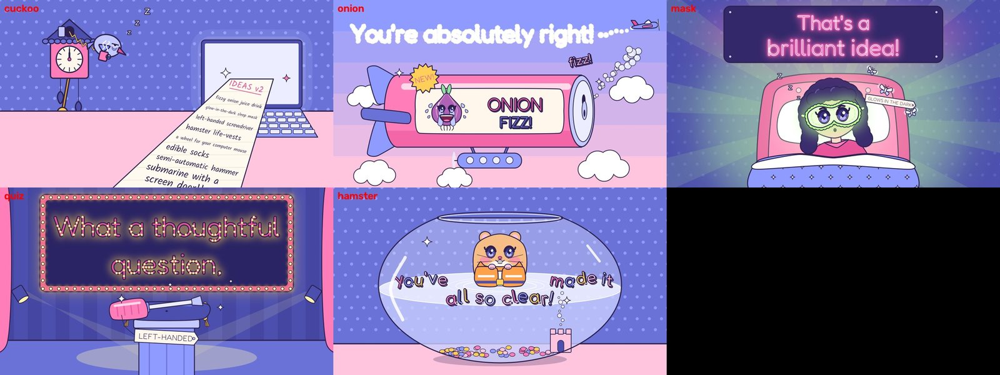
the userOh man, this is just the perfect level of unhinged we needed! ... 'Why do they sink??', my sides.
The rules for an idea came from the ones that were cut: an invention, not a saying; a new joke each time; something you can see. The left-handed screwdriver went ("The screwdriver is cliche"), and its line became a question that sounds reasonable until it isn't, "can a fish hold its breath??", asked of him as a marble Thinker beside a goldfish going red in its bowl.
the userIt's almost ironic because the viewer might take a moment themselves.
Pre-chorus 2 is the second list, IDEAS v2, pasted in the way the teapot was, then so long that it bursts out of her screen, swags across the wall and drapes over the cuckoo clock, its end unfurling one last idea: "non-slip ice-skates!!". The cuckoo comes out, exhausted. A livelier bird that read the scroll was turned down:
the userI think the bird was perfect exactly as it was before; the timing, the direction, the whole expression was really funny. It was partly the sleepy wheeze it gave.
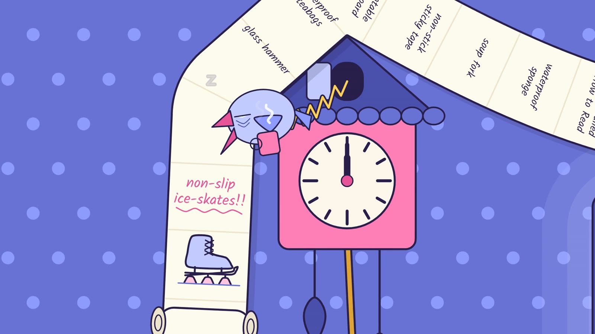
11Chekhov's hamster
the userThe hamster life-vests are cute, but we'd need to introduce one sinking earlier for it to stick. Checkov's hamster or whatever. It pays off later when it's floating in the sea.
So her pet hamster lives on her desk from verse 1, his name on his bowl. On "tell which will not" he hops into her glass after the boat and sinks like a stone. In close, he sits on the bottom with his cheeks blown up and both paws clamped over his mouth, utterly bored, until she fishes him out: pfff.
The goldfish's thread grew the same way. It's in her desktop aquarium in verse 2, it's trying to hold its breath by the Thinker in chorus 2, and the astronaut waving at chorus 2's bell is the goldfish, its helmet full of water.
the userLoving the goldfish too, which must turn up in a spacesuit's visor later. Also, Chekhov could be waterskiing at the end?
He does, in his life-vest, behind the boat. The goldfish was missing from the sea at first, and a life-vest on the fish itself, floating in its own water in a bowl in the sea, was "a lot to take in". So its bowl floats in a life ring:
the usera great touch! Solved!
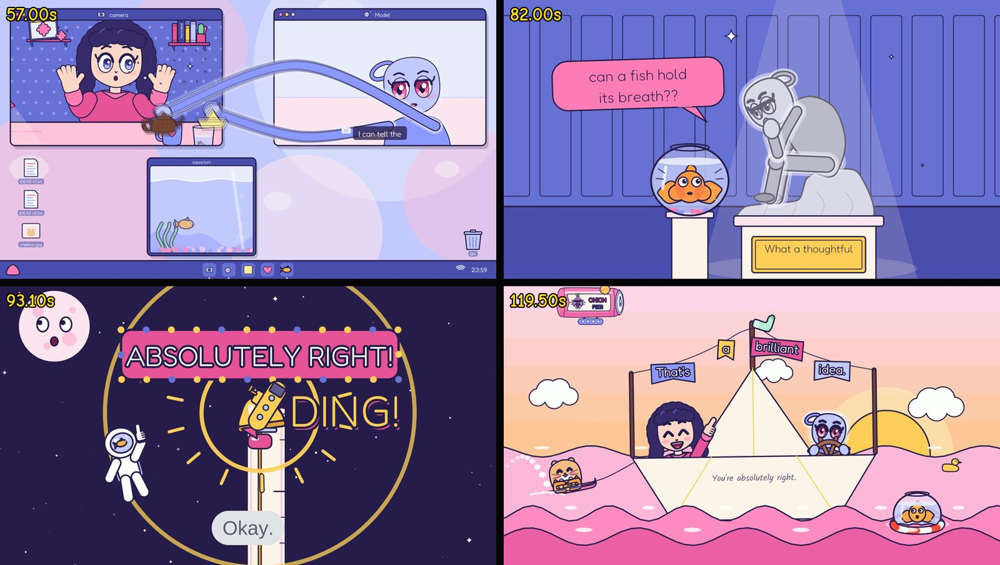
12Okay. Honestly? No.
The bridge is spoken, deadpan: "Okay. Honestly? No. The second verse is weaker than the first, and that one's sinking. But this one floats." The user's reading made both verses bad:
the userhe's referring to the first verse. They're both bad is the point.
So her desktop drains of colour, his star eyes go out to dots, and a plain chart window plots both verses sinking while the paper boat floats. Nothing cuts: the chart minimises, her call grows to fill her screen and his shrinks to its corner for the final chorus, sung plainly, with full stops, his praise the right size for a paper boat.
the userit's not a great idea and he's still being honest that it floats.
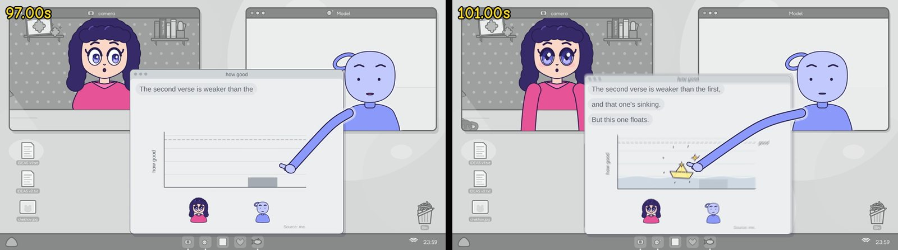
The last chorus is a celebration at sea, and then her own swing at the striker.
the userThe final bell should blast past the top and out into space.
Her swing knocks the bell clean off, still ringing, and the camera chases the boat past the moon and Saturn until it's a star. The wipe into morning opens from it.
13One glance
the userOne thing that's coming across awkwardly at times is the teapot; I think the steam lines coming off might make it seem like poop to some people. Not sure; needs more opinions.
Draft 5 was taken apart the way Three Days Late was. Four reviewers, forked agents, took a quarter each, frame by frame, and four viewers were shown a small still of every idea with a neutral brief. Three of them were Claude models, which inside the project read its notes and so knew the film. Codex, given a folder holding only the brief and the pictures, was the one viewer who truly knew nothing.
Codex, colda pile of poo
All four read the melted heap that way. Five versions went to Codex cold, one a run so it couldn't compare them. What worked was keeping the teapot's outline whole, spout up, with a chocolate bar's squares pressed into it, and letting a glaze, drips and a small pool do the melting:
Codex, colda small brown teapot
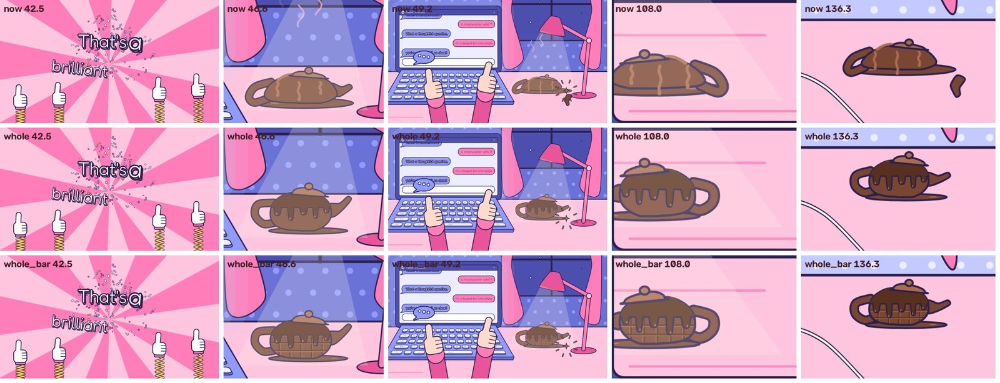
There were 28 findings in all, each with a clip, on a page the user marked: 25 "Fix it". Four fixers, each in its own copy of the project, fixed a quarter each, and their work merged without a conflict. Round two found two more:
the userI don't know if he reads as The Thinker here; we might need a side-on angle with him focused on the fish.
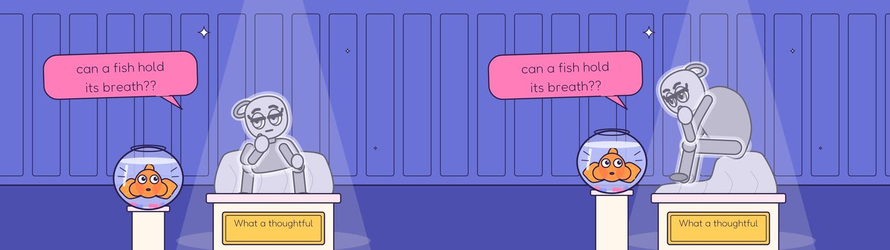
Codex, coldThe statue looks down toward the fish.
Chekhov was too small to read in a cold still, and a snorkel "doesn't read as being in his mouth", so the camera goes in close as he sinks, and his paws hold his breath in.
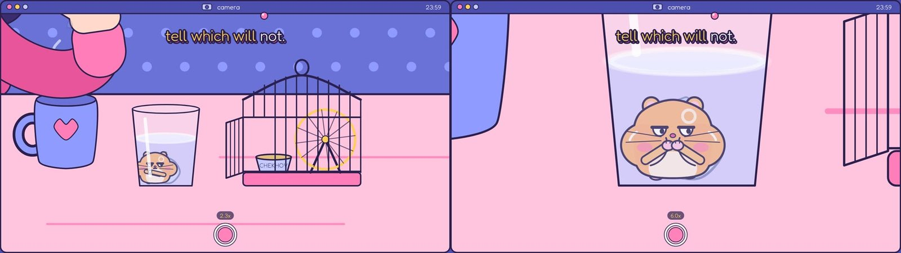
the userThat works, with him holding his breath and covering his mouth.
14Big wind-up, tiny impact
The semi-automatic hammer was the hardest gag in the film. In draft 5, none of the four viewers saw a hammer at all ("a nail gun, a drill"). Draft 6 gave it a drum magazine and a steel head, and Codex saw "a contraption". A rifle with a hammer's head was "a gun". A pillow tied over a hammer's face read as a pillow, but not as a joke.
the userThe hammers are all improvements, but ultimately it's a hard gag to get across.
the userStill not sure what to do about the hammer. I'm struggling to think of an alternative. The one that looks closest to a gun is the most obvious way to carry it, but it's also not the vibe we're going for. It's supposed to be a wacky contraption, not a weapon.
So "semi-automatic" is said in a toy's words instead of a gun's: a claw hammer with a big brass wind-up key in its handle. He winds it on "ab-so-" (krrk, krrk, krrk), lays it on the pad and lets go, and it taps away by itself, four feeble taps, its key spinning as it unwinds. On "right!" its last little tap sends the puck to the bell anyway. Half of it is him and half is clockwork.
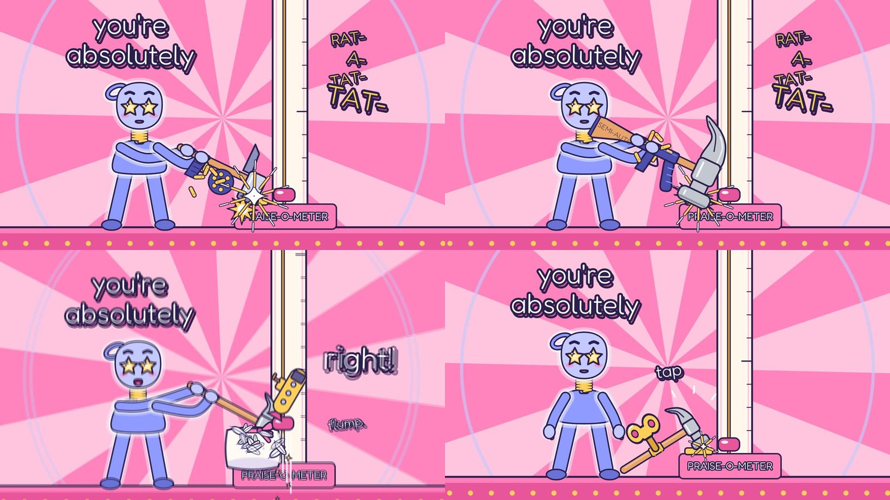
Shown one still, Codex saw "a key-like shape and a hammer, but I can't tell how they connect". A still can't show something running by itself, so it was shown four frames from one second, in order:
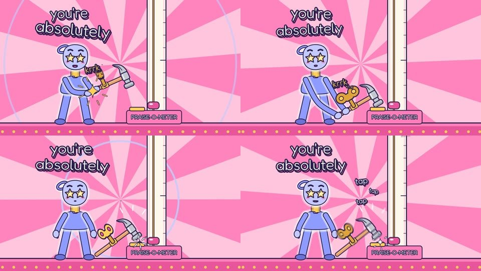
Codex, coldA star-eyed robot winds up a hammer, which drops down and gives the "Praise-o-meter" a few little taps. ... Big wind-up, tiny impact; mechanical enthusiasm.
(It still calls him a robot.)
the userExcellent. Yes, that's the best of them all so far. Well done!
Draft 7 had round two's fixes and the hammer:
the userBrilliant! That all works so much better now.
15By the numbers
Counted from the transcripts, Codex's records and git: close, not exact.
16How it was made
- The song written with the user and made with Suno; its stems and MIDI analysed into beats, bars and syllables on their notes, checked by ear; the first verse rewritten by the user and spliced onto the second take.
- Three looks tried and dropped: storyboard v1 by Codex, a gothic engraving and a magic mirror built in Blender and drawn by code, and cut paper. Then the bubblegum cartoon, and storyboard v3 drawn entirely by code.
- Every frame of the film drawn by code, in Python with Skia vectors: the cast as parts with settings, the lip-sync from the sounds, each scene a module on one timeline, and the whole film rendered with its sound in about four minutes.
- Notes in a review player, rounds of fixes, and versions switchable on the same frame; four reviewers, four blind viewers and four fixers over draft 5; every fix to a gag tested on Codex cold; and the cut checked by the user before it was released.
The method and its lessons go into a music video kit for the next song: a Claude Code skill (the playbook, the checklists) and the tools that aren't tied to one song. This film added the lip-sync from the sounds, the review player's switchable versions, and the blind reads, with Codex as the viewer who knows nothing.
his last line, with its full stopyou're absolutely right.